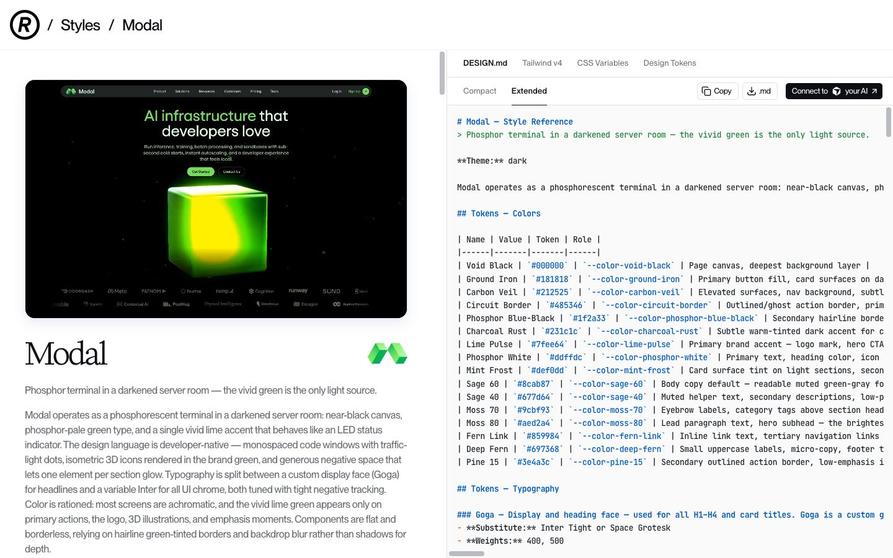

Apply it to your landing page
One page.
Clear rules.
Before building, define the visual decisions that make one landing page feel intentional: what leads, what repeats, and what action it asks for.
> Study the Modal Refero DESIGN.md as design direction only. Create a landing-page brief for MY_PRODUCT: visual hierarchy, color and type tokens, reusable components, supporting proof, and one primary CTA. Do not build yet.